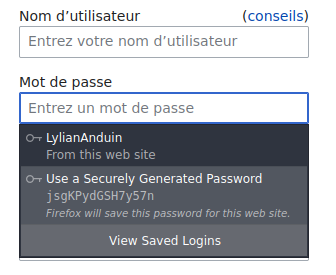

Se souvenir de tous ses mots de passe grâce à un gestionnaire de mots de passe
Mais pourquoi les mots de passes sont si compliqués ?
Long : cela permet d'empêcher une personne ou un robot de trouver votre mot de passe en essayant
toutes les combinaisons possibles.
Différent sur chaque site : si un hacker réussi à trouver un seul de vos mots de
passe, il ne pourra se connecter que sur un seul compte et pas en même temps à votre messagerie,
réseau social ou banque.
Difficile : votre mot de passe ne doit pas être facilement devinable : le nom de votre animal de
compagnie ou les dates de naissance sont à prohiber.
Mais comment satisfaire toutes ces conditions et s'en souvenir ?
Quand vous créez un mot de passe, générez le aléatoirement.

Le mot de passe est maintenant enregistré dans votre navigateur. Il vous sera proposé à votre prochaine connexion.